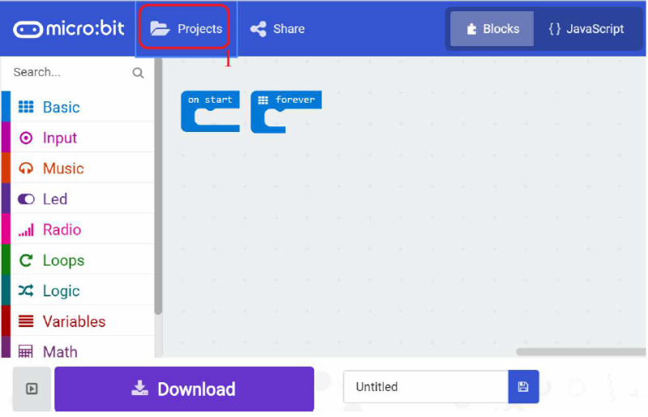

KSB039 感測器多功能板
簡介
KSB039 感測器多功能板 板載3V 5V IO電位轉換IC，讓你可以安心的使用 5V / 3V IO 的模組， 這是其它擴展板沒有的功能。
產品規格
- 蜂鳴器
- 電源開關
- 5V-3V Logic Level Converter IC
- 5V / 3V IO準位開關
- 4路RJ11插座（外接模組用）
- P0 P1 P2 P8 P12 P13 P14 P15 P16 9個3排針IO腳位
- 滑杆
- MIC 麥克風
- 4顆全彩LED
- 彩色大按鈕 2顆（KEYA， KEYB）
- IIC 孔位
- 超音波 插座
- 紅外線接收元件
- UART排母
功能說明
| KSB039 | |
|---|---|
| 1 | USB (擴展板外接USB 電源) |
| 2 | 蜂鳴器 |
| 3 | DC (擴展板外接直流電源6~12V) |
| 4 | 滑桿 |
| 5 | DC 電源開關 |
| 6 | 超音波感應器插槽 |
| 7 | RJ11 模組插座 |
| 8 | 5V/3V 準位開關 |
| 9 | micro:bit 插槽 |
| 10 | IO 3 排針腳位 |
| 11 | IO 指撥開關 |
| 12 | 麥克風 |
| 13 | 四顆WS2812 RGB 燈 |
| 14 | 紅外線接收元件 |
| A | micro:bit 的A 按鍵 |
| B | micro:bit 的B 按鍵 |
| IO 指撥開關 | 打開或關閉 已規劃使用的IO 腳位 |
|---|---|
| P0 | 蜂鳴器腳位 |
| P1 | 麥克風腳位 |
| P2 | 滑桿腳位 |
| P8 | UART 接收腳位（對應UART 插座 TXD 位置） |
| P13 | 超音波TRIG 腳位 ECHO 腳位 共用腳位 |
| P14 | 紅外線遙控接收腳位 |
| P15 | UART 傳送腳位（對應UART 插座 RXD 位置） |
| P16 | RGB LED 腳位 |
以上應用要指撥開關撥到ON 才會有作用
IO 3 排針腳位：可以接其它模組
- 黃色排針是 IO 腳位，紅色排針是 電源腳位，黑色排針是 接地
- 腳位
- 要將IO 指撥開關的相對應腳位 撥到 OFF 才能使用
- 設定 5V/3V 準位開關
- P0 P1 P2 等3 個腳位，可以直接使用小舵機，或其它類比
- IO 模組，亦可以接數位IO 模組
- P8 P12 P13 P14 P15 P16 等6 個腳位，可以接數位IO 模組
5V/3V 準位開關：設定IO 3 排針腳位 的IO 準位 如果是使用5V IO 模組，開關撥去5V，如果是使用3V IO 模組，開關撥去3V。
5V/3V 準位開關 設定的是IO 3 排針腳位 紅色排針的電源腳位
UART 插座：接UART 傳輸模組，比如WIFI 模組等 板上印刷 GND 5V TXD RXD 是直接對應模組的腳位，實際上用到擴展板腳位 是GND 5V P8 P15
基本範例
範例下載：選範例後再另存連結
基本擴展積木：https://github.com/kaise-ksrobot/pxt-KSB039
範例1 主板LED 和蜂鳴器範例
打開瀏覽器連結
https://makecode.microbit.org/

IO 指撥開關 的P0 撥到ON
1.按Project
2.按 Import File 匯入 microbit-EX1_LED_BEEP.hex
- 再按Download ，再指定micro:bit 的磁碟
Download 過程，主板LED 會閃爍，等一會，就會看到LED 會秀“KSRobot” 和 音樂聲響起
範例2 主板LED 和滑桿範例
IO 指撥開關 的P2 撥到ON，
5V/3V 準位開關切在5V，
依照以前章節，把microbit-EX2_Slide.hex 範例下載後，
使用擴展板的USB 電源 或 DC 電源
滑桿讀取值範圍 5~1023
範例使用說明：移動滑動開關，可以看到主板LED 會顯示讀到的類比值
範例3 主板LED 和麥克風範例
IO 指撥開關 的P1 撥到ON，
5V/3V 準位開關切在5V，
依照以前章節，microbit-EX3_MIC.hex 範例下載後，
使用擴展板的USB 電源 或 DC 電源
範例使用說明：對者麥克風說話，可以看到主板LED 會有變化，
範例4 RGB 全彩LED 範例
IO 指撥開關 的P16 撥到ON，
5V/3V 準位開關切在5V，
依照以前章節，microbit-EX4_RGB_LED.hex 範例下載後，
使用擴展板的USB 電源 或 DC 電源
範例使用說明：按KEYA 4 顆RGB LED 會出現不同顏色，按 KEYB 清除所有燈號
PS：makecode 每次版本更新時，請重新載入積木
https://github.com/microsoft/pxt-neopixel
範例5 超音波範例
超音波簡略接法如圖
IO 指撥開關 的P13 撥到ON，
5V/3V 準位開關切在5V，
依照以前章節，microbit-EX5_SONAR.hex 範例下載後，
使用擴展板的USB 電源 或 DC 電源
範例使用說明：用手在不同距離對超音波阻擋，可以看到主板LED 會顯示距離
PS：makecode 每次版本更新時，請重新載入積木 https://makecode.microbit.org/pkg/microsoft/pxt-sonar
範例6 小舵機控制範例
小舵機SG90 簡略接法如圖
將 舵機 接在IO 3 排針腳位的P0 P1 P2，
IO 指撥開關 的P0 P1 P2 撥到OFF，
5V/3V 準位開關切在5V，
依照以前章節，microbit-EX6_SERVO.hex 範例下載後，
使用擴展板的USB 電源 或 DC 電源
P0 P1 P2 的舵機會轉到指定位置
範例使用說明：3 顆舵機會依照設定角度轉動
範例7 紅外遙控使用範例
IO 指撥開關 的P14 撥到ON，
5V/3V 準位開關切在5V，
依照以前章節，microbit-EX7_IRRemote.hex 範例下載後，
使用擴展板的USB 電源 或 DC 電源
使用凱斯電子的KSRobot 紅外遙控器
範例使用說明：使用搖控器按0~3 ，可以看到主板LED 會顯示相關數字
PS：makecode 每次版本更新時，請重新載入積木 https://github.com/kaise-ksrobot/pxt-ksrobot-ir
教學 載入makecode 新積木
由於使用者可能會使用網路上的一些新積木，所以加這個章節
使用網址載入方式
以KSRobot 紅外搖控積木為例，輸入
https://github.com/kaise-ksrobot/pxt-ksrobot-ir

會出現積木相關訊息，這時點選積木就可
就會出現你新加入的積木
應用圖示